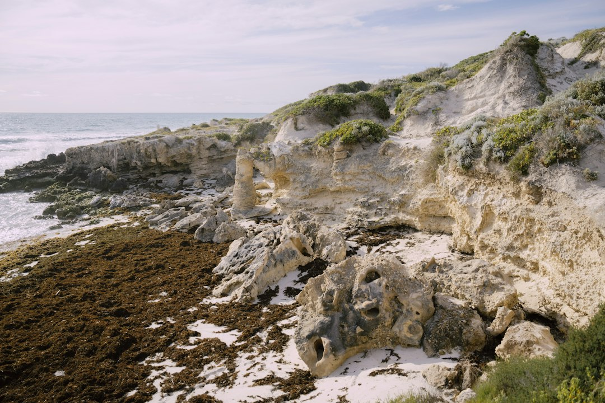

For homeowners comparing limestone retaining walls perth options, the useful starting point is not style alone, but height, drainage, soil, boundary context and whether WA permit rules apply.
Limestone Retaining Walls Perth Explained
Retaining Walls Perth presents limestone as Perth's signature retaining material because the coastal sand belt sits on Tamala limestone. That does not make it automatic for every block. It makes it a strong candidate when the owner wants a locally familiar cream block finish and the site conditions suit a block wall rather than a panel, sleeper or engineered masonry system.
The best early question is what the wall must do. A low garden edge, a level pad on a split-level block, a boundary-adjacent cut and a wall holding excavation all need different conversations. Sand can look stable, but the source page notes that retaining is still commonly needed to stop a face ravelling during excavation or to create usable level ground.
Ask the contractor to separate the visible wall choice from the hidden specification. Limestone blocks may set the appearance, but the quote should still explain excavation, footing preparation, drainage and whether the wall height places it inside or outside the WA exemption.
Permit and engineering checks
Western Australia is not using the looser rule some owners hear from other states. The published source states that the exemption line is 0.5 m of retained ground. It also says the exemption depends on other conditions, including whether the wall is tied to other building work, protects adjoining land, or affects a boundary wall or dividing fence.
For walls above that line, or walls connected to broader building work, the source describes engineered and permit-approved retaining as a separate service. It also refers to design to AS 4678 and engineering sign-off where required.
- Measure retained height, not just the exposed face.
- Ask whether the wall interacts with a boundary, fence, driveway, building pad or neighbouring land.
- Confirm the local government permit position before work starts.
- Get the compliance path in writing, especially where engineering is mentioned.
Limestone compared with panel systems
Limestone retaining walls give a Perth-specific visual result, while concrete post and panel walls are described as galvanised steel posts with slotted concrete panels. The same source notes that some suppliers market that system as precast or twin-side, which helps explain why quotes can use different names for a similar approach.
Cost comparisons should use square metres of wall face, because the source page says that is the standard way Perth retaining wall quotes are compared. Its guide range is roughly $250-$600/m2 for limestone block and $450-$700/m2 for concrete post and panel, before excavation, drainage and engineering are added.
For broader context on retaining wall choices in Perth, this related guide to retaining walls across Perth is useful when comparing limestone with concrete, timber, rock and engineered options.
Drainage belongs in the quote
The source page treats drainage as a structural requirement rather than an optional extra. It names ag-drain, gravel and geofabric behind every wall type, and connects that detail to Perth's wet winter and dry summer cycle.
That matters when reading quotes because a cheaper wall face may not tell the whole story. Ask whether drainage is included, where water will discharge, how the backfill is specified and whether the quoted wall type changes the drainage allowance. If the answer is vague, the quote is not yet detailed enough to compare with another offer.
For an existing wall, the same page lists warning signs that deserve assessment: a visible lean or bulge, horizontal cracking, gaps opening at the base, water pooling or seeping through the face after rain, and soil settling or slumping above the wall.
Who this applies to
This guide is most relevant to Perth homeowners planning a new wall, replacing a failed wall, shaping a garden terrace, cutting into a sloped block, or checking whether a proposed limestone finish still needs engineering or permit attention.
It is also useful when comparing local material choices. The source lists limestone block, concrete post and panel, besser block, timber sleeper, rock and boulder walls, drainage systems, engineered walls and repairs. Those options cover very different levels of structure, finish and site preparation.
A practical enquiry should include wall height, wall length, suburb or postcode, slope, soil context, boundary position and what the wall is meant to support. That lets the contractor discuss material fit, compliance and the next step without relying on a headline price alone.
- Measure the job. Record the wall height, length, slope, boundary position and whether the wall supports a pad, garden, fence or excavation.
- Check the permit line. Ask whether the wall retains more than 0.5 m of ground and whether any extra WA exemption conditions are affected.
- Compare materials. Review limestone, post and panel, besser block, timber, rock or engineered options against the site rather than appearance alone.
- Read the drainage allowance. Look for ag-drain, gravel, geofabric and water discharge details before comparing prices.
- Request a written quote. Ask for excavation, drainage, engineering and permit assumptions to be stated clearly in the quote.
| Option | Best fit from the source page | Quote questions |
|---|---|---|
| Limestone block | Local Tamala limestone or reconstituted block for a Perth finish | Ask about retained height, footing, drainage and permit status |
| Concrete post and panel | Galvanised steel posts with slotted concrete panels | Ask whether the quote is for precast, post and panel or twin-side terminology |
| Besser block | Core-filled, steel-reinforced concrete block walls for taller engineered retaining | Ask what engineering and finish are included |
| Timber sleeper | H4-treated pine and hardwood sleeper walls for garden terraces and low boundary retaining | Ask whether the height and location stay within the intended use |
| Rock and boulder | Natural stone and boulder walls battered back on sloped Perth Hills blocks | Ask how drainage and batter are handled |
This guide covers Perth retaining wall material choice, WA permit checks, drainage questions, quote comparison and limestone-specific planning.